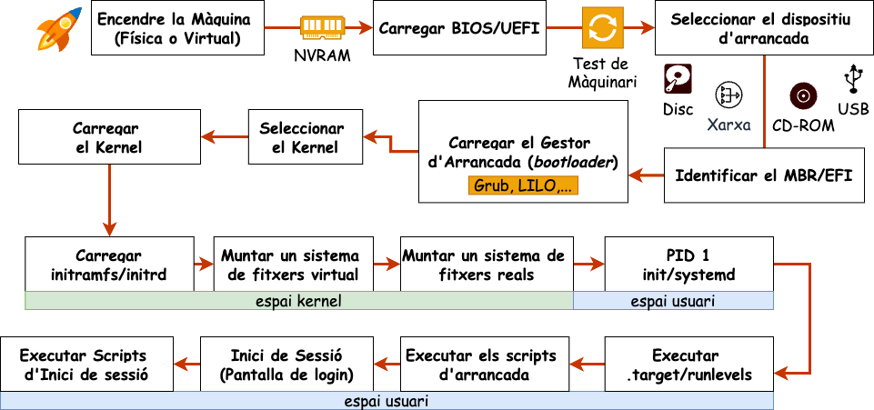
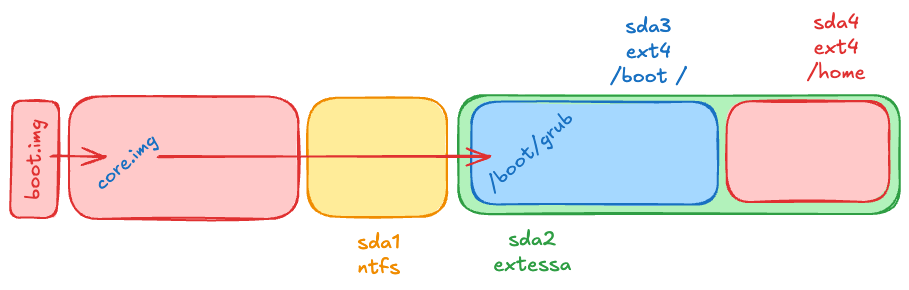
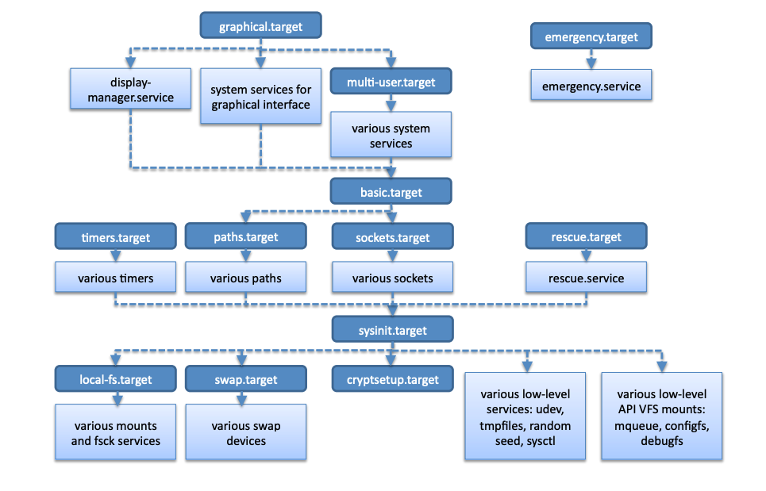
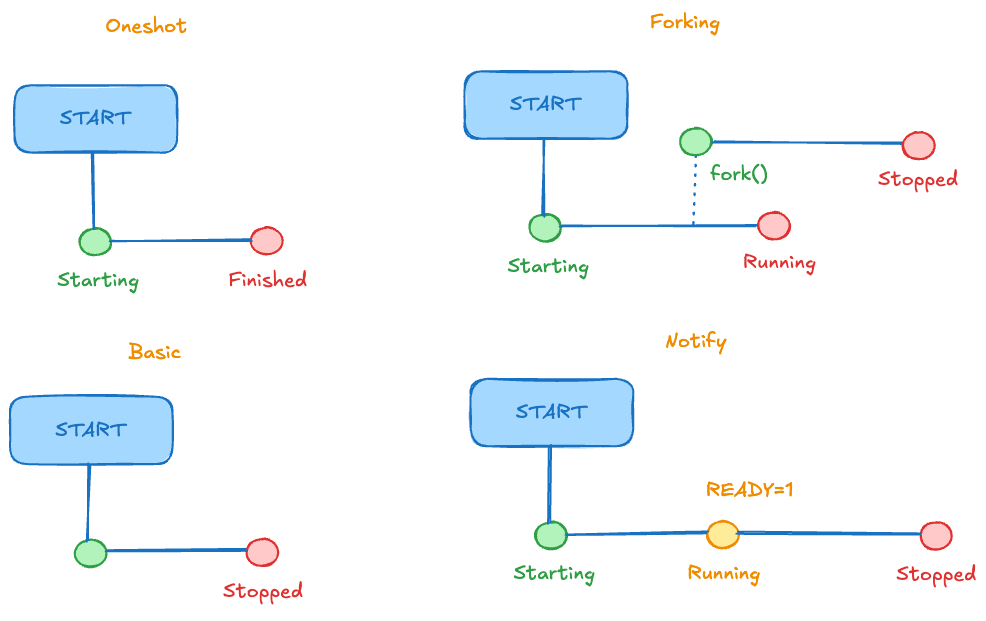

Arrencada del sistema (Part 2)
Unitat 2 · Administració i Manteniment de Sistemes i Aplicacions (AMSA)
Etapes de l’arrancada
Què és el GRUB/GRUB2?
GRUB (GRand Unified Bootloader) és un gestor d’arrencada molt utilitzat en sistemes operatius Linux i altres sistemes Unix-like. La seva funció principal és carregar un kernel del sistema operatiu a la memòria i iniciar el procés d’arrencada.
- Funcions principals:
- Permet seleccionar entre múltiples sistemes operatius instal·lats en un mateix ordinador (multi-boot).
- Proporciona una interfície per configurar opcions d’arrencada, com ara paràmetres del kernel.
- Suporta diferents sistemes de fitxers, permetent accedir a particions amb formats com ext4, Btrfs, XFS, entre altres.
- Ofereix una consola interactiva per a la resolució de problemes i la configuració avançada.
Etapes d’execució del GRUB
- Stage 1:
- En sistemes BIOS: efectivament és el codi al MBR (o VBR) → molt petit (≤ 446 bytes).
- En sistemes UEFI: és un fitxer executable EFI (normalment a /boot/efi/EFI/grub/grubx64.efi).
- Stage 1.5 (només en BIOS, opcional):
- Proporciona suport bàsic per a sistemes de fitxers.
- Normalment es troba en sectors buits després del MBR (espai entre MBR i primera partició). core.img.
- Stage 2:
- Conté el GRUB complet amb el menú d’arrencada.
- Pot carregar mòduls addicionals (drivers de FS, vídeo, xarxa, criptografia…).
- Llegeix el fitxer de configuració (grub.cfg) i carrega el kernel i l’initramfs a la memòria.
- Transfereix el control al kernel per iniciar el sistema operatiu.
Diagrama d’arrencada del GRUB
- set root=‘hd0,msdos1’: Indica la partició arrel on es troba el sistema operatiu que es vol arrencar.
- linux /vmlinuz root=/dev/sda1: Indica la ruta del kernel i la partició arrel.
- initrd /initramfs.img: Indica la ruta de l’initramfs.
- boot: Inicia el sistema operatiu.
Configuració del GRUB (I)
El fitxer principal de configuració de GRUB2 és:
- /boot/grub/grub.cfg (o /boot/grub2/grub.cfg en algunes distribucions).
Important
No s’ha d’editar directament, ja que es regenera automàticament.
Fitxers i directoris
/etc/default/grub: Opcions generals de configuració i variables d’entorn./etc/grub.d/
Directori amb scripts que generengrub.cfg:00_header→ configuració inicial
10_linux→ detecta kernels Linux
30_os-prober→ detecta altres SO
40_custom→ entrades personalitzades
Configuració del GRUB (II)
Un cop modificats els fitxers anteriors, cal regenerar grub.cfg:
Variables /etc/default/grub
| Variable | Descripció |
|---|---|
GRUB_BACKGROUND |
Imatge de fons que es mostrarà al menú d’arrencada. |
GRUB_TIMEOUT |
Temps en segons abans de carregar l’entrada predeterminada. |
GRUB_DEFAULT |
Entrada per defecte que es carregarà (index o nom) |
GRUB_CMDLINE_LINUX |
Opcions de línia de comandes que es passen al nucli en arrencar el sistema. |
GRUB_DISABLE_RECOVERY |
Si true, desactiva les opcions de mode de recuperació. |
GRUB_DISABLE_OS_PROBER |
Si true, impedeix que GRUB busqui altres sistemes operatius instal·lats. |
GRUB_PRELOAD_MODULES |
Llista de mòduls GRUB que es carregaran abans de mostrar el menú d’arrencada. |
Paràmetres del kernel més comuns
| Paràmetre | Descripció |
|---|---|
quiet |
Suprimeix els missatges del nucli durant l’arrencada. |
single |
Inicia el sistema en mode d’usuari únic (single-user mode) per a tasques de manteniment. |
splash |
Mostra una imatge de fons durant l’arrencada en lloc de missatges de text. |
nomodeset |
Desactiva la detecció de modes de vídeo, útil per a solucions de problemes amb gràfics. |
root= |
Especifica la partició arrel del sistema de fitxers. |
init= |
Especifica un fitxer d’init alternatiu. |
ro |
Muntatge de la partició arrel en mode de només lectura durant l’arrencada. |
rw |
Muntatge de la partició arrel en mode de lectura i escriptura durant l’arrencada. |
systemd.unit = |
Especifica el target de systemd a iniciar (ex: multi-user.target, graphical.target). |
Consideracions addicionals
- En UEFI, GRUB2 és un fitxer EFI a /boot/efi/EFI/
/grubx64.efi. - Es poden protegir entrades amb contrasenya a /etc/grub.d/40_custom.
- Al menú, amb
ees poden passar paràmetres temporals al kernel. - GRUB permet chainloading per arrencar altres SO (Windows, BSD).
- Amb UEFI Secure Boot, GRUB pot ser signat digitalment.
Secure Boot
Secure Boot és una característica de seguretat del firmware UEFI que assegura que només es carregui i s’executi programari de confiança durant el procés d’arrencada del sistema.
- Quan s’encén el sistema
- UEFI comprova la signatura digital del bootloader EFI (per exemple, grubx64.efi) abans de carregar-lo.
- La signatura és comparada amb les claus de confiança emmagatzemades en la DB (Database of allowed signatures) del firmware.
- Si la signatura és vàlida, UEFI carrega i executa el bootloader. Sinó, impedeix l’execució del bootloader i mostra un missatge d’error.
- Bootloader signat (GRUB EFI)
- Pot carregar mòduls addicionals signats, que també poden ser verificats pel mateix GRUB (opcional).
- Kernel i initramfs
- El kernel Linux també pot estar signat (opcional, si s’utilitza Linux Kernel Signing).
- Si s’utilitza Shim, aquest actua com a intermediari: el firmware UEFI confia en Shim, i Shim verifica després GRUB i el kernel.
Problemes de Secure Boot
- Compatibilitat: No tots els sistemes operatius o distribucions Linux suporten Secure Boot de manera nativa.
- Claus de confiança: La gestió de claus pot ser complexa, especialment en entorns corporatius.
- Actualitzacions: Les actualitzacions del bootloader o del kernel poden requerir la re-signatura dels components.
- Restriccions: Algunes funcionalitats avançades poden estar limitades per les polítiques de Secure Boot.
Malgrat Secure Boot, s’han detectat vulnerabilitats que permeten carregar bootloaders no autoritzats en alguns dispositius (ArsTechnica, 2024).
Inici del sistema operatiu
Què és el kernel?
El kernel és el nucli del sistema operatiu, responsable de gestionar els recursos del sistema, com la memòria, el processador, els dispositius d’entrada/sortida, la xarxa i els processos d’usuari.

El kernel es carrega a la memòria RAM durant el procés d’arrencada i es troba normalment a la partició arrel del sistema de fitxers (generalment en /boot).
El kernel és un programa binari que es compila específicament per a l’arquitectura de maquinari del sistema (per exemple, x86, ARM, etc.)
Pot ser personalitzat amb diferents mòduls i controladors segons les necessitats del sistema.
Carregar el kernel
Per carregar el kernel, el bootloader necessita:
- Ruta del kernel
- Normalment un fitxer com vmlinuz-version dins de
/boot.
- Normalment un fitxer com vmlinuz-version dins de
- Partició arrel
- La partició on es troba el sistema de fitxers del sistema operatiu.
- Fitxer de configuració del bootloader
- Com grub.cfg en el cas de GRUB, que indica ruta del kernel, paràmetres i initramfs.
- Càrrega de l’initramfs
- Initramfs (initial RAM filesystem) és un sistema de fitxers temporal a RAM.
- Permet inicialitzar controladors bàsics i muntar la partició arrel real abans de transferir el control al kernel complet.
- Initramfs (initial RAM filesystem) és un sistema de fitxers temporal a RAM.
Initramfs o initrd
Què és l’Initramfs?
L’Initramfs (Initial RAM Filesystem) és un petit sistema de fitxers integrat dins la imatge del nucli Linux.
- Permet que el kernel pugui muntar la partició arrel durant l’arrencada.
- A diferència de l’antic initrd, que residia en un disc, l’initramfs es carrega completament a RAM com a imatge comprimida.
Objectius
- Proporcionar un sistema de fitxers temporal i mínim.
- Carregar mòduls essencials del kernel necessaris per accedir a maquinari i sistemes de fitxers.
- Executar scripts d’inicialització abans de transferir el control al sistema complet.
Etapes de l’Initramfs (I)
- Descompressió a la RAM
- El fitxer CPIO de l’initramfs es descomprimeix a un sistema de fitxers temporal a RAM (
tmpfs), creant l’entorn mínim necessari per iniciar el kernel.
- El fitxer CPIO de l’initramfs es descomprimeix a un sistema de fitxers temporal a RAM (
- Execució de l’script
/init/inités l’entrypoint principal de l’initramfs.
- Executa la seqüència d’inicialització: muntatge de sistemes virtuals, càrrega de mòduls i preparació de l’entorn.
- Creació del sistema de fitxers temporal
- Muntatge de
/proc,/sysi/dev.
- Creació de directoris temporals (
/tmp,/run) per permetre que els scripts i utilitats funcionin.
- Muntatge de
- Carregar mòduls del kernel
- Carrega controladors necessaris per accedir a maquinari (discos, controladors de xarxa, LVM, RAID, xifrat).
- Si els mòduls estan integrats al kernel, aquesta etapa pot ser mínima o nul·la.
- Carrega controladors necessaris per accedir a maquinari (discos, controladors de xarxa, LVM, RAID, xifrat).
Etapes de l’Initramfs (II)
- Muntatge de la partició arrel real
- Localitza la partició arrel (per exemple
/dev/sda1oUUID=...).
- Muntatge en un punt temporal (
/mnt/rooto similar).
- Localitza la partició arrel (per exemple
- Transició al sistema complet (
switch_root)- Substitueix l’entorn temporal de l’initramfs pel sistema de fitxers real.
- Executa el binari
initdel sistema complet (normalment/sbin/inito systemd).
- Substitueix l’entorn temporal de l’initramfs pel sistema de fitxers real.
- Alliberament de l’initramfs
- Destruir l’entorn temporal a RAM.
- Alliberar la memòria utilitzada pel sistema de fitxers temporal, deixant el control complet al sistema operatiu.
- Destruir l’entorn temporal a RAM.
Característiques de l’Initramfs
- Facilita la portabilitat i modularitat del kernel, permetent arrencar diferents configuracions de maquinari sense necessitat de recompilar el kernel cada cop.
- No sempre està present, pot estar buit o omès si el sistema no necessita un espai RAM inicial (per exemple, en sistemes simples o compilacions estàtiques del nucli).
- Es configura durant la compilació del nucli
make menuconfigi es pot definir el contingut de l’initramfs amb un fitxer de configuració, s’utiltizen variables:- CONFIG_BLK_DEV_INITRD: Activa la creació de l’initramfs.
- CONFIG_INITRAMFS_SOURCE: Especifica el fitxer CPIO, un directori o un fitxer d’especificació.
- També es pot personalitzar segons les necessitats del sistema, permetent afegir mòduls del kernel, scripts personalitzats o utilitats addicionals.
Contingut de l’initramfs
- Fitxers executables
- Ex: BusyBox, que encapsula moltes utilitats Unix (
ls,cp,mount, shell, etc.).
- Poden incloure altres programes compilats estàticament.
- Ex: BusyBox, que encapsula moltes utilitats Unix (
- Mòduls del kernel
- Controladors per discos, xarxes, sistemes RAID o LVM.
- Són carregats si no estan integrats dins del nucli.
- Controladors per discos, xarxes, sistemes RAID o LVM.
- Fitxers de dispositiu i sistemes especials
/devconté dispositius comttyonull.
- Gestionats per utilitats com mdev o udev.
Tots aquests elements es troben comprimits en un fitxer CPIO, descomprimits a RAM durant l’arrencada i executats per l’script /init.
Configuració de l’initramfs
L’initramfs es pot personalitzar segons les necessitats del sistema, permetent afegir mòduls del kernel, scripts personalitzats o utilitats addicionals. La configuració depèn de la distribució:
Debian/Ubuntu
Fedora/Red Hat
initramfs-tools (Debian) (I)
/etc/initramfs-tools/modules
Llista de mòduls addicionals del kernel a incloure a l’initramfs, per exemple controladors de xarxa o discos RAID.
/etc/initramfs-tools/hooks/
Scripts que s’executen durant la creació de l’initramfs, útils per afegir fitxers o directoris personalitzats.
/etc/initramfs-tools/conf.d/
Fitxers de configuració addicionals per modificar paràmetres específics de l’initramfs.
/etc/initramfs-tools/initramfs.conf
Configuració principal, inclou opcions com compressió, ús de scripts, paràmetres de muntatge.
/usr/share/initramfs-tools/
Scripts i fitxers estàndard utilitzats per initramfs-tools, no modificats normalment.
initramfs-tools (Debian) (II)
/etc/initramfs-tools/scripts/
Scripts que s’executen durant l’arrencada:init-top/→ scripts executats just després de descomprimir l’initramfs i abans de muntar/proc,/sysi/dev. Ideal per inicialitzar serveis crítics o preparar dispositius especials.
init-bottom/→ scripts executats just abans de ferswitch_rootal sistema complet. Útil per passos finals com muntar la partició arrel, desbloquejar LUKS o activar LVM.
local-bottom/→ scripts addicionals definits per l’administrador.local-top/→ scripts addicionals definits per l’administrador.premount/→ scripts executats abans de muntar la partició arrel. Ideal per preparar dispositius o sistemes de fitxers especials.mount/→ scripts executats durant el muntatge de la partició arrel. Útil per passos específics relacionats amb el muntatge.cleanup/→ scripts executats després de ferswitch_rootal sistema complet. Ideal per netejar recursos temporals o realitzar tasques posteriors a l’arrencada.
dracut (Fedora/Red Hat)
/etc/dracut.conf
Fitxer de configuració principal de Dracut, on es poden definir opcions generals: compressió, tipus de fitxer d’initramfs, paràmetres del kernel, etc.
/etc/dracut.conf.d/
Fitxers de configuració addicionals, útils per a configuracions específiques de mòduls o projectes.
/usr/lib/dracut/modules.d/
Conté mòduls estàndard de Dracut (ex: mòduls de xarxa, lvm, cryptsetup), carregats automàticament segons la configuració.
/etc/dracut/modules.d/
Mòduls personalitzats creats per l’administrador, per afegir scripts o fitxers específics.
/usr/share/dracut/
Conté scripts i fitxers estàndard utilitzats durant la generació de l’initramfs, igual que a initramfs-tools.
Quan regenerar l’initramfs?
- Actualització del nucli: Quan es compila o instal·la un nou kernel, l’initramfs associat ha de ser regenerat per garantir que carrega correctament els mòduls i el maquinari necessari.
- Configuració RAID: Si es modifiquen o s’afegeixen sistemes RAID, l’initramfs ha de reflectir aquests canvis per assegurar un arrencada correcta.
- Xifrat de discos: Per a sistemes amb particions xifrades (LUKS), cal actualitzar l’initramfs després de canvis en la configuració de xifrat per poder accedir a les particions durant l’arrencada.
- Configuració de xarxa: Si es canvien components de xarxa que s’utilitzen en el procés d’arrencada (sistemes amb arrencada PXE).
Cas d’us: USB amb clau de desxifrat
Un cas d’ús comú de l’initramfs és en sistemes amb particions xifrades amb LUKS que utilitzen una clau emmagatzemada en un dispositiu USB per desxifrar la partició arrel durant l’arrencada.
- Munti els sistemes virtuals necessaris (
/proc,/sys).
- Munti la unitat USB que conté la clau.
- Llegeixi la clau i desxifri la partició LUKS.
- Activar volums LVM si cal.
- Muntar la partició arrel i transferir el control amb
switch_root.
#!/bin/busybox sh
mount -t proc proc /proc
mount -t sysfs sys /sys
mount /dev/sdb1 /mnt
KEYFILE=/mnt/keyfile
cryptsetup luksOpen /dev/sda1 crypted --key-file $KEYFILE
echo "Retira el dispositiu USB i prem Enter per continuar."
read
vgchange -a y
mount /dev/mapper/vg-root /mnt
exec switch_root /mnt /sbin/initPID 1: init/systemd
Quan s’acaba el procés d’inicialització del sistema en l’espai del kernel i es descomprimeix i executa l’initramfs, es produeix una transició important cap a l’espai d’usuari.
- El comandament
switch_rootsubstitueix l’arrel del sistema de fitxers actual (l’initramfs) per la partició arrel real del sistema operatiu. - El kernel deixa de gestionar directament els processos i passa el control a un procés en l’espai d’usuari.
- El procés PID 1 és el primer procés que s’inicia en l’espai d’usuari i és responsable de la gestió dels processos del sistema operatiu.
- Tradicionalment, aquest procés era el programa init, però en els sistemes moderns, systemd ha substituït init com a responsable principal de la gestió de processos.
Funcions de PID 1
- Gestió de la inicialització del sistema. Carrega els serveis i dimonis necessaris per al bon funcionament del sistema.
- Gestió dels processos del sistema. Controla la creació, execució i finalització dels processos. Si un procés orfe (un procés que perd el seu procés pare) continua en execució, el PID 1 assumeix la seva gestió i, eventualment, la seva terminació.
- Arrel de l’arbre de processos: Tots els altres processos del sistema pengen d’ell, directament o indirectament. Això fa que sigui fonamental per a l’estabilitat i la continuïtat del sistema.
- Apagat i reinici del sistema: El PID 1 també és responsable de controlar l’apagat i reinici del sistema, garantint que els processos es tanquin adequadament i que el sistema es desconnecti de manera segura
Systemd vs SysVinit
El canvi de SysVinit a Systemd en moltes distribucions de Linux va ser motivat per la necessitat de millorar l’eficiència i la gestió dels serveis del sistema.
SysVinit
- Seqüencial: Basat en scripts. Cada servei depèn de l’execució completa del servei anterior, la qual cosa pot ser lenta.
- Simple: Cada servei s’inicia amb un script directament llegible i modificable per l’administrador del sistema.
- Inflexible: Dificultat engestionar dependències. No permet arrencar serveis en paral·lel ni controlar els processos un cop arrencats.
Systemd
- Rendiment: Capacitat de carregar serveis en paral·lel. Reducció temps d’inici del sistema.
- Modularitat: Els serveis es gestionen a través d’unitats (unit files) que poden especificar dependències, condicions de reinici automàtic,etc.
- Cgroups: Limitar/gestionar els recursos assignats a cada servei.
- Monitoratge: Control i seguiment granular dels serveis amb journalctl.
Crítiques a Systemd
- Complexitat
- Integra múltiples funcionalitats (gestió de serveis, journal, timers, logind, networkd, etc.) en un sol procés. Això pot augmentar la superfície de fallada i dificultar la depuració.
- Trenca amb la filosofia Unix tradicional
- Unix promou eines petites, especialitzades i composables.
- Systemd concentra moltes tasques en un únic sistema de gestió.
- Unix promou eines petites, especialitzades i composables.
- Dependència del sistema
- Molts scripts, paquets i eines modernes depenen de systemd, dificultant la compatibilitat amb sistemes alternatius (SysVinit, OpenRC).
Debat en la comunitat
- Els defensors de systemd argumenten que simplifica l’administració de sistemes moderns i ofereix funcions que abans requerien múltiples eines externes.
- Els crítics insisteixen en que és massa intrusiu i redueix la flexibilitat per a administradors avançats i entorns mínims.
Backdoor en XZ Utils (I)
Recents vulnerabilitats en paquets com xz-utils han posat en evidència la complexitat de Systemd i com una backdoor ocult pot comprometre gran part de la infraestructura moderna de Linux.
- El backdoor va ser introduït de manera gradual, començant amb contribucions sospitoses al projecte libarchive el 2021.
- Durant el 2022, un desenvolupador desconegut, JiaT75, va guanyar influència dins del projecte xz-utils, substituint el contacte del mantenidor original i introduint canvis que van ocultar les vulnerabilitats.
- El 2023, JiaT75 va introduir modificacions malicioses a xz-utils, aprofitant-les per comprometre sistemes a través de dependències amb Systemd.
CVE-2024-3094: Vulnerabilitat que permet l’execució de codi maliciós en el sistema mitjançant un defecte en la descompressió de fitxers .xz.
Backdoor en XZ Utils (II)
Aquesta vulnerabilitat va afectar molts servidors Linux, que van actualitzar xz-utils amb la versió compromesa.
- liblzma és una llibreria de compressió que es pot enllaçar amb altres programes. Per exemple, OpenSSH es pot vincular a liblzma per gestionar la descompressió de fitxers de configuració.
- En sistemes amb systemd, OpenSSH enllaça amb systemd, que a la vegada enllaça amb liblzma. Això permet a XZ Utils controlar indirectament serveis essencials com sshd.
- Mitjançant una backdoor oculta en versions modificades de xz-utils, un atacant amb una clau de xifrat prèviament establerta podria carregar codi maliciós en certificats SSH i executar-lo en dispositius compromesos.
Aquests esdeveniments posen de manifest les contrapartides de la complexitat de Systemd i com una vulnerabilitat en un paquet aparentment inofensiu com xz-utils pot tenir un impacte significatiu en la seguretat del sistema i serveis crítics com sshd.
Executar els Targets o Runlevels
El PID 1 executa els targets de systemd. En sistemes més antics, s’utilitzaven els runlevels d’init. Els targets representen un conjunt de serveis i mòduls que s’executen per a cada estat del sistema. La seva funció és definir l’estat del sistema i els serveis que s’han de carregar en aquest estat. La transició entre els targets es pot fer manualment amb la comanda systemctl isolate o automàticament amb la comanda systemctl set-default.
- default.target: Apunta a graphical.target o multi-user.target-
- graphical.target: Defineix un entorn gràfic.
- multi-user.target: Proporciona un entorn no gràfic, permetent múltiples usuaris al sistema, habitual per a servidors.
- rescue.target: Proporciona un entorn de rescat amb una consola de línia de comandes.
- emergency.target: Ofereix un entorn d’emergència que inicialitza el mínim de serveis necessaris per a la solució de problemes.
- shutdown.target: Gestiona l’apagat del sistema.
- reboot.target: Gestiona el reinici del sistema.
Units de systemd
Els units són els fitxers de configuració de systemd que defineixen els serveis, ens permeten gestionar-los i controlar-los.
/etc/systemd/system/– Fitxers d’unitat personalitzats per l’administrador./run/systemd/system/– Configuració en temps d’execució, és a dir, afecta només un arrencada única./usr/lib/systemd/system/– Configuració proporcionada per la distribució. A Debian és/lib/systemd/system/.
Quan hi ha dos fitxers de configuració amb el mateix nom, systemd carregarà només un des del directori que estigui més alt en la jerarquia. Per exemple, la configuració a /etc sempre sobreescriu la configuració a /usr.
Després de canviar la configuració, és necessari recarregar systemd amb: systemctl daemon-reload.
Tipus d’unitats
- Serveis: Fitxers que defineixen com s’inicien, s’aturen i es gestionen els serveis. Ex:
/etc/systemd/system/sshd.service(servei SSH). - Sockets: Units que gestionen els sockets de comunicació per als serveis.
- Devices: Units que representen dispositius de maquinari.
- Mounts: Units que gestionen els punts de muntatge del sistema de fitxers.
- Paths: Units que monitoren els canvis en fitxers o directoris específics.
- Timers: Units que planifiquen tasques per a la seva execució en moments específics.
- Targets: Units que agrupen altres units per a l’arrencada d’estats del sistema.
Targets i Systemd
Exemple de fitxer d’unitat
Dependències entre unitats
Les unitats són objectes gestionats per systemd. Les dependències són associacions entre elles. Cada tipus d’unitat té algunes dependències per defecte (a menys que s’especifiqui el contrari).
Relacionals
- Requires: Indica que una unitat depèn d’una altra unitat per a la seva activació. Si la unitat requerida no està activa, la unitat que la requereix no s’activarà.
- Wants: Similar a Requires, però no és tan estricte. Si la unitat requerida no està activa, la unitat que la vol no es bloquejarà.
- BindsTo: Similar a Requires, però si la unitat requerida es deté, la unitat que la vincula també es detindrà.
- PartOf: Indica que una unitat és part d’una altra unitat. Si la unitat pare es deté, la unitat fill també es detindrà.
- Conflicts: Indica que dues unitats no poden estar actives al mateix temps. Si una unitat s’activa, l’altra es detindrà automàticament.
Ordenació
- After: Indica que una unitat s’ha d’iniciar després d’una altra unitat. No crea una dependència estricta, només defineix l’ordre d’inici.
- Before: Indica que una unitat s’ha d’iniciar abans d’una altra unitat. No crea una dependència estricta, només defineix l’ordre d’inici.
Transaccions a systemd (I)
Cada vegada que l’usuari o un servei sol·licita una acció (per exemple, iniciar o aturar un servei), es crea una transacció que gestiona l’execució ordenada de les unitats afectades.
- Creació de feines (jobs)
- Es crea una feina per a la unitat sol·licitada.
- S’afegeixen recursivament les feines corresponents a totes les dependències de la unitat.
- Es crea una feina per a la unitat sol·licitada.
- Minimització de la transacció
- Eliminar feines duplicades o redundants.
- Eliminar feines que no estiguin referenciades per cap altre job (ancoratge).
- Eliminar feines duplicades o redundants.
- Resolució de cicles de dependències
- Detectar loops en el gràfic de dependències.
- Trencar-los eliminant feines problemàtiques per evitar deadlocks.
- Detectar loops en el gràfic de dependències.
Transaccions a systemd (I)
- Fusió i optimització de feines
- Fusionar feines similars per reduir el nombre d’operacions.
- Prioritzar feines ja existents a la cua.
- Fusionar feines similars per reduir el nombre d’operacions.
- Enviament i execució
- Afegir les feines a la cua de jobs de systemd.
- Executar les feines segons la dependència i l’ordre optimitzat.
- Afegir les feines a la cua de jobs de systemd.
Garanteix que les unitats es gestionin de manera atòmica i ordenada, permetent a systemd paral·lelitzar serveis mentre respecta les dependències.
systemctl (I)
La comanda systemctl és l’eina principal per interactuar amb systemd i gestionar els serveis i unitats del sistema. Algunes de les operacions més comunes inclouen:
| Comanda | Descripció |
|---|---|
systemctl start <unit> |
Inicia una unitat (servei, socket, etc.). |
systemctl stop <unit> |
Atura una unitat. |
systemctl restart <unit> |
Reinicia una unitat. |
systemctl status <unit> |
Mostra l’estat actual d’una unitat. |
systemctl enable <unit> |
Habilita una unitat perquè s’iniciï automàticament en arrencar el sistema. |
systemctl disable <unit> |
Deshabilita una unitat perquè no s’iniciï automàticament. |
systemctl is-active <unit> |
Comprova si una unitat està activa. |
systemctl is-enabled <unit> |
Comprova si una unitat està habilitada per arrencar automàticament. |
systemctl (II)
| Comanda | Descripció |
|---|---|
systemctl list-units |
Llista totes les unitats carregades actualment. |
systemctl list-unit-files |
Llista tots els fitxers d’unitats disponibles. |
systemctl list-dependencies <SERVICE> |
Mostra les dependències d’una unitat. |
systemctl list-jobs |
Mostra les feines pendents i en execució. |
Unitat [INSTALL]
- La secció
[Install]defineix com s’instal·la i s’inicia una unitat. WantedBy=multi-user.targetindica que aquesta unitat s’ha d’iniciar quan s’arrenca el sistema en mode multiusuari (runlevel 3).Also=permet associar altres unitats que s’han d’iniciar juntament amb aquesta.Alias=crea un nom alternatiu per a la unitat, facilitant la seva referència.
Opcions [Service] (I)
| Opció | Descripció |
|---|---|
Type= |
Defineix el tipus de servei (simple, forking, oneshot, notify, idle). |
ExecStart= |
Comanda que s’executa per iniciar el servei. |
ExecStop= |
Comanda que s’executa per aturar el servei. |
ExecReload= |
Comanda que s’executa per recarregar la configuració del servei. |
RemainAfterExit= |
Indica si el servei es manté actiu després de finalitzar. |
Restart= |
Defineix si el servei s’ha de reiniciar en cas de fallada. |
User= |
Defineix l’usuari amb el qual s’executa el servei. |
Group= |
Defineix el grup amb el qual s’executa el servei. |
Opcions [Service] (II)
| Opció | Descripció |
|---|---|
Environment= |
Defineix variables d’entorn per al servei. |
WorkingDirectory= |
Defineix el directori de treball del servei. |
PIDFile= |
Especifica el fitxer que conté el PID del servei. |
TimeoutStartSec= |
Temps d’espera per a l’inici del servei. |
TimeoutStopSec= |
Temps d’espera per a l’aturada del servei. |
StandardOutput= |
Defineix on s’envia la sortida estàndard del servei. |
StandardError= |
Defineix on s’envia l’error |
Tipus de serveis (I)
- Simple: Per defecte, aquest servei s’inicia immediatament després del
fork(). No espera cap senyal de que el servei estigui llest. - Forking: Aquest tipus de servei és per a processos que es bifurquen (fork) i es converteixen en dimonis. El servei es considera actiu després que el procés pare finalitzi.
- Oneshot: Aquest tipus és per a serveis que realitzen una tasca única i després finalitzen. Systemd espera que el procés acabi abans de considerar el servei com a actiu.
- Notify: Aquest tipus de servei utilitza el mecanisme de notificació de systemd per informar quan està llest. El servei ha d’enviar una notificació explícita a systemd.
- DBus: Aquest tipus de servei s’utilitza per a serveis que es comuniquen a través de DBus. El servei es considera actiu quan el nom del bus apareix al bus de sistema.
- Idle: Aquest tipus de servei s’inicia només quan el sistema està inactiu, és a dir, quan no hi ha altres feines pendents.
Efecte del tipus de servei al runtime
Script de l’usuari
Un cop s’han carregat tots els serveis i el sistema està en marxa, els usuaris poden iniciar sessió al sistema. Els scripts de l’usuari es troben a la carpeta /etc/profile.d/ i s’executen quan l’usuari inicia sessió.
- /etc/profile: Conté la configuració global per a tots els usuaris. S’executa en iniciar sessió en un entorn de shell.
- /etc/bashrc: Proporciona configuració per a shells interactius. S’executa cada vegada que s’inicia una nova sessió de shell.
- ~/.bashrc: Fitxer de configuració específic per a l’usuari, que s’executa en iniciar una sessió de shell interactiu.
- ~/.bash_profile: S’executa quan l’usuari inicia sessió a la terminal. Normalment, s’utilitza per configurar l’entorn de l’usuari, incloent la configuració de l’PATH.
- ~/.bash_logout: S’executa quan l’usuari tanca la sessió de shell. Aquí es poden incloure comandes de neteja o tancament.
- ~/.bash_history: Fitxer que emmagatzema l’històric de les comandes executades per l’usuari en la sessió de shell.
That’s all
Take Home Message
El procés d’arrencada és un procés complex. Els administradors de sistemes han de conèixer aquest procés per poder gestionar i solucionar problemes durant l’arrencada del sistema i garantir un sistema segur, estable i eficient.


Unitat 2 · Administració i Manteniment de Sistemes i Aplicacions (AMSA) 🏠